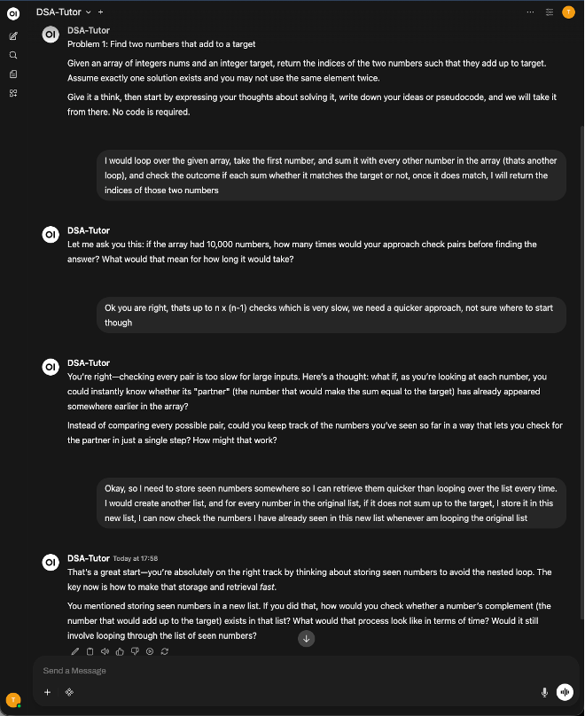
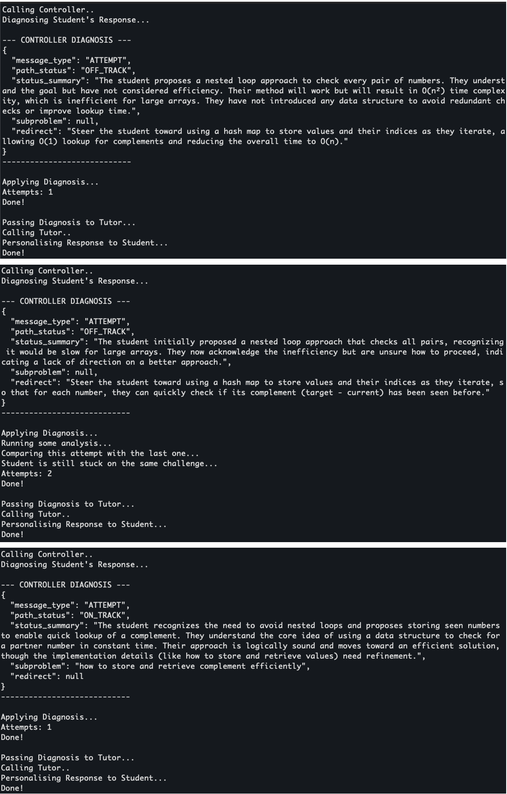

An AI-orchestrated learning space for higher education — built on Socratic guidance, peer explanation, and the science of how people actually learn.
Three failure modes are emerging as students adopt AI tools for study — and none of the existing platforms are designed to address them.
Regular AI use weakens students' ability to plan, monitor and evaluate their own thinking — metacognitive skills that may not return when AI is removed.
Bastani et al., 2024 · Fan et al., 2025
Students increasingly study alone with AI, losing the peer accountability, explanation, and learning-by-teaching that consolidate real understanding.
Yan et al., 2024
Students bypass productive struggle and accept quick AI answers without reasoning through problems — the precise cognitive work that builds durable knowledge.
Du et al., 2025 · Kapur, 2014
One AI engine orchestrating six steps that work together. Each step targets one of the failure modes above.
Instructor grounds CoLearn in course materials, topics, and learning goals so every challenge is curriculum-relevant.
AI generates course-based challenges that require reading, reasoning, and problem solving — no copy-paste answers.
Students work from the challenge back into the concepts they need — the opposite of passive reading.
Students attempt first. The AI guides with questions, staged hints, and redirects — without giving full solutions.
Students explain their solution to a peer and review another's reasoning. Teaching consolidates what the AI session started.
XP rewards solving, peer review, and helping others. Sprints and leaderboards keep progress visible and shared.
The EdTech landscape has solved individual pieces well. No platform combines them in a single university-ready learning environment.
AI-orchestrated problem solving, Socratic guidance, peer explanation, and gamified progression — in one learning space built for universities.
A student works through a real problem. The AI never gives the answer — it reads their reasoning, detects where they're stuck, and asks the question that moves them forward.

The tutor classifies each student message as an attempt, a question, or a bypass — and personalises the next response accordingly.

A three-stage LLM pipeline diagnoses student thinking, compares attempts across turns, and maps learner state to a hint tier before responding.
CoLearn is founded by Taha Tobaili, a researcher and NLP engineer whose work on Socratic AI in higher education at Imperial College London became the foundation for this platform.
Before CoLearn, Taha built production NLP systems at Amazon Alexa and IBM Watson. He holds a PhD in NLP and Data Science.
CoLearn is currently in early-stage development, building toward pilot programs with universities. The MVP covers AI-facilitated study rooms, Socratic tutoring on problem sets, and peer learning mechanics.
If you are a faculty member, department, or institution interested in piloting CoLearn, we would love to hear from you.